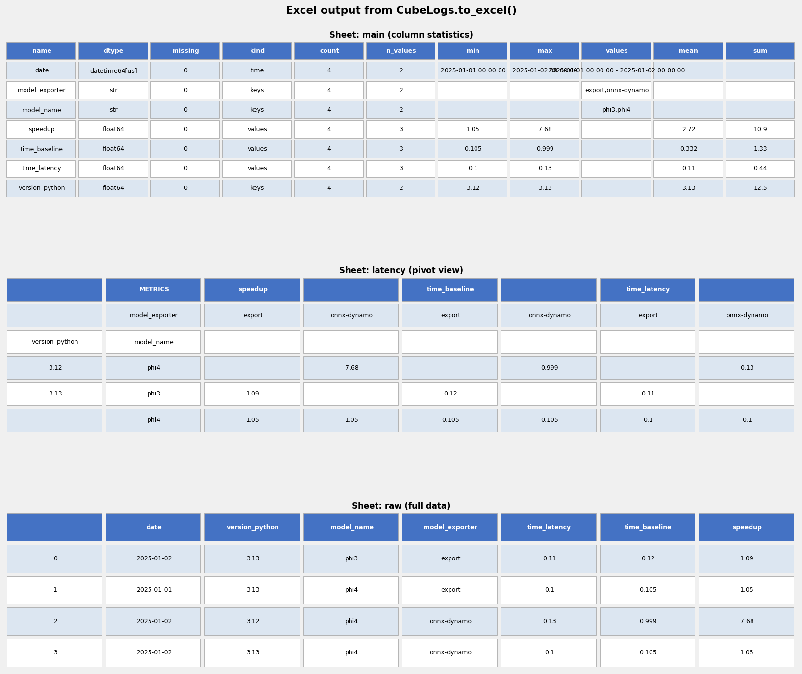

Statistics on Logs Through a Cube of Data¶
CubeLogs is a lightweight
data-analysis layer built on top of pandas. It treats experiment
logs as a cube — a structured table whose columns play one of four roles:
time — a single date/timestamp column (default
"date"). It is optional but strongly recommended.keys — categorical identifiers (model name, exporter, hardware device, …). Together with time, the key tuple must uniquely identify every row.
values — numerical or string measurements that can be aggregated (latency, memory, error counts, …).
ignored — columns explicitly excluded from all three roles above.
Everything else is silently dropped after loading.
CubeLogsPerformance
is a ready-made subclass whose defaults match the conventions used by
benchmarking scripts in this project (columns prefixed time_, disc_,
onnx_, etc.).
Loading data¶
Pass any of the following to the constructor, then call
load:
a list of
pandas.DataFrameobjects (concatenated automatically)a list of dicts (each dict becomes one row)
a list of file paths / directory paths to CSV files
<<<
import io
import textwrap
import pandas
from yobx.helpers.cube_helper import CubeLogs
raw = pandas.read_csv(io.StringIO(textwrap.dedent("""
date,version_python,model_name,model_exporter,time_latency,time_baseline
2025/01/01,3.13,phi3,export,0.10,0.10
2025/01/02,3.13,phi3,export,0.11,0.10
2025/01/01,3.13,phi4,export,0.10,0.105
2025/01/01,3.12,phi4,onnx-dynamo,0.14,0.999
""")))
cube = CubeLogs(
raw,
time="date",
keys=["version_.*", "model_.*"],
values=["time_.*"],
recent=True, # keep only the most recent row per key tuple
).load()
print("shape :", cube.shape)
print("time :", cube.time)
print("keys :", cube.keys_no_time)
print("values:", cube.values)
>>>
shape : (3, 6)
time : date
keys : ['model_exporter', 'model_name', 'version_python']
values: ['time_baseline', 'time_latency']
When recent=True the cube keeps only the most recent row (highest time
value) for each combination of key columns. This is useful when experiment
logs are appended over time and you only care about the latest run.
Column patterns¶
The keys, values, and ignored arguments accept plain column names
or Python regular expressions. A string is treated as a regular
expression when it contains any of the characters "^.*+{}":
CubeLogs(df, keys=["^version_.*", "model_name", "device"], ...)
Adding computed columns (formulas)¶
Pass a dictionary of {new_column_name: callable} as the formulas
argument. Each callable receives the full DataFrame and
must return a Series. Computed columns are appended to the
values list.
<<<
import io
import textwrap
import pandas
from yobx.helpers.cube_helper import CubeLogs
raw = pandas.read_csv(io.StringIO(textwrap.dedent("""
date,version_python,model_name,model_exporter,time_latency,time_baseline
2025/01/01,3.13,phi3,export,0.10,0.12
2025/01/01,3.13,phi4,export,0.10,0.105
2025/01/01,3.12,phi4,onnx-dynamo,0.14,0.999
""")))
cube = CubeLogs(
raw,
time="date",
keys=["version_.*", "model_.*"],
values=["time_.*"],
formulas={"speedup": lambda df: df["time_baseline"] / df["time_latency"]},
).load()
print("values:", cube.values)
print(cube.data[["model_name", "model_exporter", "speedup"]])
>>>
values: ['time_baseline', 'time_latency', 'speedup']
model_name model_exporter speedup
0 phi3 export 1.200000
1 phi4 export 1.050000
2 phi4 onnx-dynamo 7.135714
Pivot views¶
CubeLogs.view creates a
pivot table from the cube. Rows and columns of the pivot are controlled by a
CubeViewDef object.
<<<
import io
import textwrap
import pandas
from yobx.helpers.cube_helper import CubeLogs, CubeViewDef
raw = pandas.read_csv(io.StringIO(textwrap.dedent("""
date,version_python,model_name,model_exporter,time_latency,time_baseline
2025/01/01,3.13,phi3,export,0.10,0.12
2025/01/01,3.13,phi4,export,0.10,0.105
2025/01/01,3.12,phi4,onnx-dynamo,0.14,0.999
""")))
cube = CubeLogs(
raw,
time="date",
keys=["version_.*", "model_.*"],
values=["time_latency", "time_baseline"],
).load()
view = cube.view(
CubeViewDef(
key_index=["version_python", "model_name"],
values=["time_latency", "time_baseline"],
ignore_columns=["date"],
)
)
print(view.to_string())
>>>
/home/xadupre/github/yet-another-onnx-builder/yobx/helpers/cube_helper.py:1093: Pandas4Warning: Starting with pandas version 4.0 all arguments of all will be keyword-only.
new_data = data[~v.isnull().all(1)]
METRICS time_baseline time_latency
model_exporter export onnx-dynamo export onnx-dynamo
version_python model_name
3.12 phi4 NaN 0.999 NaN 0.14
3.13 phi3 0.120 NaN 0.1 NaN
phi4 0.105 NaN 0.1 NaN
The result is a DataFrame with a MultiIndex
on both the row index (key_index) and the columns
(metrics × remaining key values).
CubeViewDef options¶
Parameter |
Purpose |
|---|---|
|
Key columns placed in the row index of the pivot table |
|
Metric columns to include in the pivot |
|
Drop key columns that have only one distinct value |
|
Keys to aggregate away before pivoting |
|
Aggregation function(s) passed to |
|
Extra aggregations over multiple columns simultaneously |
|
Explicit ordering of column levels |
|
Columns to exclude from the view |
|
Keep a column even if it has only one distinct value |
|
Transpose rows and columns |
|
Attach a |
|
Reset the index, returning a flat DataFrame |
Aggregated views¶
Set key_agg to collapse one or more key dimensions before building the
pivot. This is useful for summarising across all models or all dates:
view = cube.view(
CubeViewDef(
key_index=["version_python"],
values=["time_latency"],
key_agg=["model_name", "date"],
agg_args=lambda col: "mean",
name="aggregated",
)
)
Describing the cube¶
CubeLogs.describe returns
a summary DataFrame with one row per column, showing its
role (time / keys / values / ignored), dtype, missing-value count, and basic
statistics:
<<<
import io
import textwrap
import pandas
from yobx.helpers.cube_helper import CubeLogs
raw = pandas.read_csv(io.StringIO(textwrap.dedent("""
date,version_python,model_name,model_exporter,time_latency,time_baseline
2025/01/01,3.13,phi3,export,0.10,0.12
2025/01/01,3.13,phi4,export,0.10,0.105
2025/01/01,3.12,phi4,onnx-dynamo,0.14,0.999
""")))
cube = CubeLogs(
raw,
time="date",
keys=["version_.*", "model_.*"],
values=["time_.*"],
).load()
print(cube.describe()[["kind", "dtype", "missing", "min", "max"]].to_string())
>>>
kind dtype missing min max
name
date time datetime64[us] 0 2025-01-01 00:00:00 2025-01-01 00:00:00
version_python keys float64 0 3.12 3.13
model_name keys str 0 NaN NaN
model_exporter keys str 0 NaN NaN
time_latency values float64 0 0.1 0.14
time_baseline values float64 0 0.105 0.999
Exporting to Excel¶
CubeLogs.to_excel writes
an .xlsx workbook. Each view is placed on its own sheet. A raw sheet
with the full cube data and a main sheet with per-column statistics can be
added automatically.
cube.to_excel(
"results.xlsx",
views={
"latency": CubeViewDef(
key_index=["version_python", "model_name"],
values=["time_latency"],
ignore_columns=["date"],
name="latency",
plots=True,
),
"baseline": "time_baseline", # shorthand: auto-generated view
},
main="main", # sheet with per-column statistics
raw="raw", # sheet with the complete cube data
)
Passing a plain string as a view is a shorthand: the cube calls
make_view_def to
produce a sensible default view for that metric.
The resulting workbook contains one sheet per view plus the optional main (column statistics) and raw (full data) sheets:

CubeLogsPerformance¶
CubeLogsPerformance
is a subclass of CubeLogs with
defaults tuned for ML benchmarking logs. Its constructor pre-configures:
time column:
"DATE"(uppercase; contrast with the"date"default in the baseCubeLogs)key patterns:
version_.*,model_.*,device,exporter,suite,machine,dtype,architecture, and several others.value patterns:
time_.*,disc.*,ERR_.*,onnx_.*, and related prefixes.formulas:
speedup,ERR1,n_models,n_model_faster, a full suite ofn_node_*counts, and more — all computed automatically from the raw columns.recent=True: only the most recent row per key tuple is kept.
Usage is identical to CubeLogs:
from yobx.helpers.cube_helper import CubeLogsPerformance
cube = CubeLogsPerformance(df).load()
view = cube.view(CubeViewDef(...))
See also
CubeLogs API —
full API reference generated from docstrings.
CubeLogsPerformance API —
subclass pre-configured for ML performance logs.